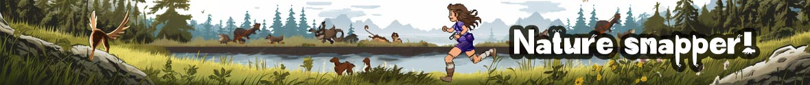

Photograph as many animals as you can in 20 seconds - but don't get eaten!
Move with arrows. Take pictures with spacebar
20s
Score: 0
Start Game
Reset
Based on the
Game of Life
by John Horton Conway. Made by Jo Burnham in 2023.